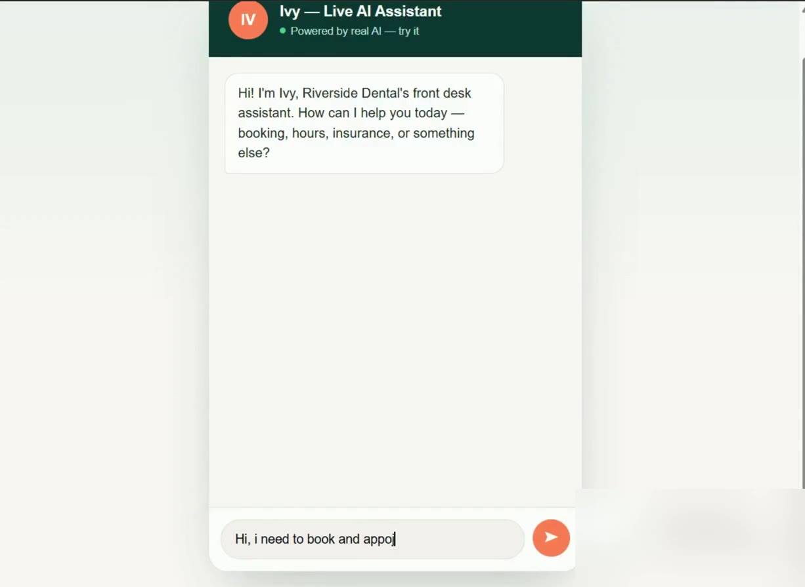
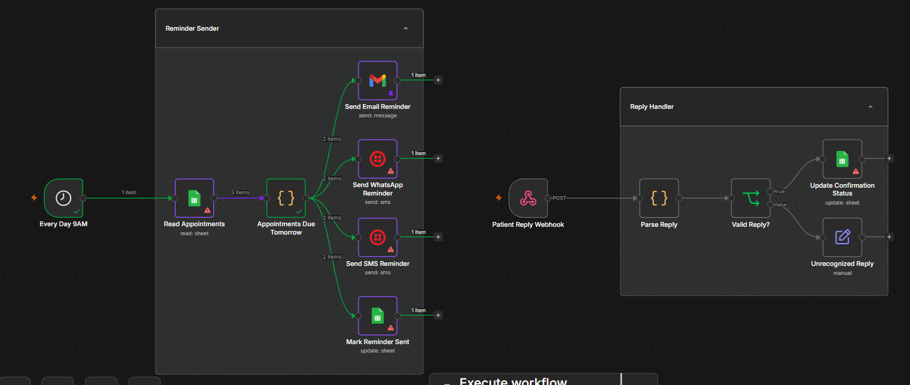
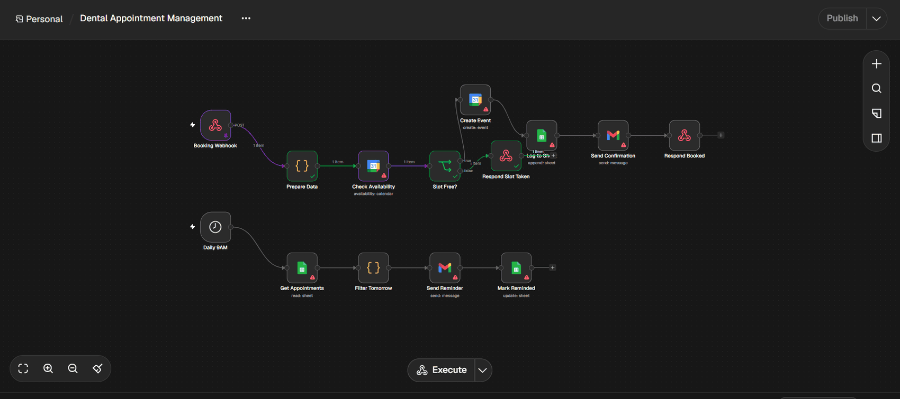
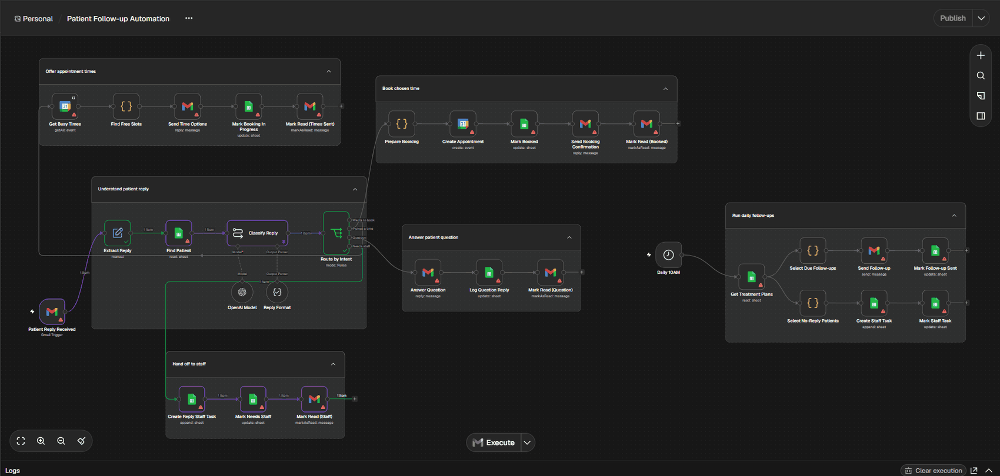
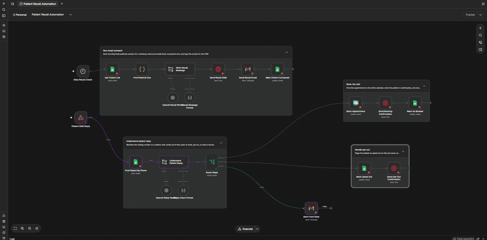
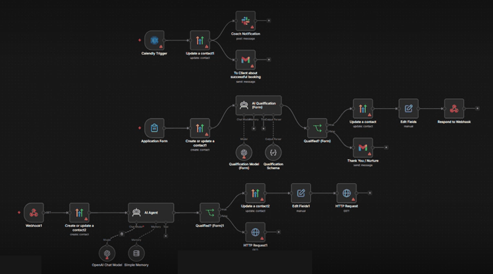

When they call
Your team is with a patient, on hold with a carrier, or the office is closed. The call rolls to voicemail, and most callers do not leave a message.
Your front desk can’t answer two calls at once, and nobody is there at 7:42 PM. Vyntra builds the layer underneath your team that answers, books and follows up when they can’t, so the patient in the chair keeps their full attention.
The part you can’t see
A missed call leaves no complaint, no cancellation and no empty slot to point at. The patient simply calls the next practice on Google. You don’t need my numbers to see what that costs. Use yours.
Most owners are surprised by how often the phone goes unanswered at the exact moments new patients call.
The second layer
A patient can drift away at any point between the first call and the next hygiene visit. It is rarely anyone’s fault. There are simply more tasks than hands. Vyntra adds a second layer underneath your team that catches them, stage by stage.
Your team is with a patient, on hold with a carrier, or the office is closed. The call rolls to voicemail, and most callers do not leave a message.
Someone reads about Invisalign at 9 PM, has one question and leaves. A form inquiry waits in the inbox until someone has a free minute.
Booking, moving and confirming take calls and texts. A late cancellation leaves a hole in the schedule that nobody has time to fill.
Treatment plans go cold, hygiene patients quietly lapse and reviews depend on someone remembering to ask.
Proof, not promises
These are working demo builds, not mock-ups. Pick one and press play.
A patient calls after hours. The AI answers, asks what they need and books the visit while they are still on the line.
A visitor asks a question at 9 PM. The chatbot answers it, collects the details and books the appointment.
An inquiry comes in, the AI qualifies it, the right person is assigned and the CRM record updates itself.
Is this for you?
If one of these sounds like your office, let’s talk.
One or two people check patients in, handle insurance and answer every call. Some calls will always slip, and you would like those patients caught, not lost.
Ads, SEO and Google reviews bring people in. You want every one of those inquiries answered quickly, whether it comes by call, form or chat.
Overdue hygiene, unscheduled treatment and cancelled visits sit in your system. You know the opportunity is there. Nobody has the time to chase it.
Our Work
Most practices begin where they lose the most patients. Open any system to see what your team sees and what your patient receives.
Problem it solvesMissed calls and after-hours inquiries. Picks up when your team can’t, answers the questions patients ask first and books the visit while they are still on the line.

Problem it solvesWebsite visitors who leave without asking

Problem it solvesCallers who hang up and try the next practice

Problem it solvesNo-shows and empty chairs

Problem it solvesPhone tag every time someone books, moves or cancels

Problem it solvesTreatment plans that never get scheduled

Problem it solvesHygiene patients drifting past their recall

Problem it solvesInquiries scattered across inboxes and notebooks

Problem it solvesCancellations that leave open slots

Problem it solvesReviews that depend on someone remembering to ask
How I Work
You see the plan and a working demo before anything touches your patients.
A short call about how your front desk handles calls, web inquiries and reminders today. I tell you honestly which system to build first, and which ones can wait.
I write down what the system says to patients, when it hands over to your team and where every record is saved. You approve the wording before I build.
I connect it to your calendar, phone line and CRM, then run real scenarios with your team. Never with your patients.
I go live, watch the first calls and messages closely and adjust what needs it. Ongoing support is there if you want it.
About Us
Vyntra builds automation for dental practices and nothing else. The workload is easy to see in dentistry: calls, inquiries, reminders and recalls, all competing with the patient in the chair.
I treat missed calls and lapsed patients as a systems problem, not a staffing problem. Your team is not the issue. They are doing the work of three people. Every system here has its own case study, so you can see how it works before you commit to anything.
You watch a working build before you decide anything.
No made-up numbers or promised returns. I show what each system does and how, and you judge it for yourself.
Anything urgent, sensitive or unusual goes to a person, with the whole conversation attached.
No. Your team does the work that needs a person: greeting patients, handling insurance, reading the room. These systems take the repetitive calls, texts and reminders off their plate and hand over anything urgent or sensitive.
Most practices start where they lose the most patients, and for many that is the phone. I tell you which one makes sense first on the discovery call.
In most cases, yes. On the discovery call I check your phone provider, calendar and CRM, and tell you plainly what is possible before you commit.
Each system collects only what the practice needs. Before anything goes live, I go through HIPAA requirements and vendor agreements with you.
No. Texting setups include consent and opt-out handling, and I go through the rules for your messages with you before launch.
Patients read and hear plain, warm language written for your practice. You approve the wording before launch, and a patient can ask for a person at any point.
Both depend on the system and your setup. You get a timeline and a fixed quote after the discovery call.
Contact
Tell me about your practice and what you would like to fix first, and I will reply personally. No sales pressure. You will see a working demo and decide afterwards.
Prefer a quick message? Chat with me on WhatsApp.
I will read it and be in touch. If you have not picked a time yet, I will send you one.